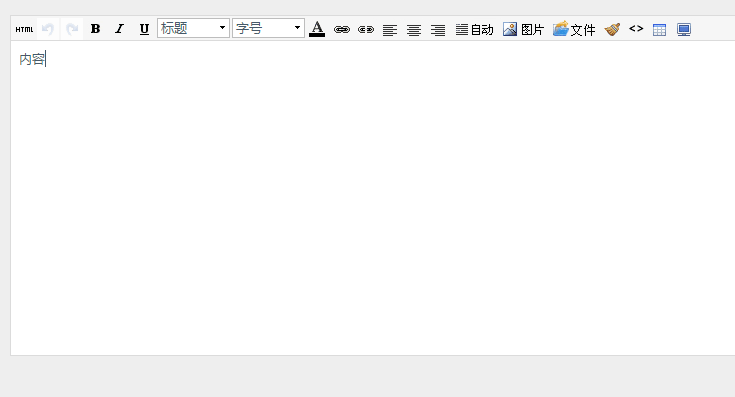

如何使用 Xiuno Editor 1.0 ?
<!DOCTYPE html>
<html>
<head>
<title>XiunoPHP</title>
<meta http-equiv="Content-Type" content="text/html; charset=UTF-8" />
<link href="../xiunoui/xiuno.css" type="text/css" rel="stylesheet" />
<link href="../xiunoui/icon.css" type="text/css" rel="stylesheet" />
<link href="../xneditor/editor.css" type="text/css" rel="stylesheet" />
</head>
<body style="background: #EEEEEE;">
<textarea id="message" name="message" style="width: 100%; height: 300px;">内容</textarea>
</body>
</html>
<script src="../xiunoui/jquery-1.11.1.js"></script>
<script src="../xiunoui/async.js"></script>
<script src="../xiunoui/xiuno.js"></script>
<script src="../xiunoui/dialog.js"></script>
<script src="../xiunoui/upload.js"></script>
<script src="../xneditor/editor.js"></script>
<script>
var editor = new $.XNEditor({textarea: 'message', image_upload_url:'1.php', image_upload_width: 800, file_upload_url:'2.php'});
//editor.clear();
editor.focus();
/// editor.jeditor.popover('请输入内容');
</script>
效果：
